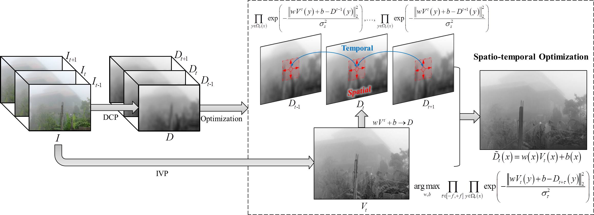
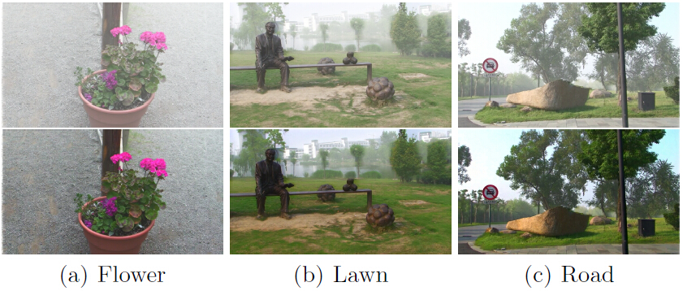
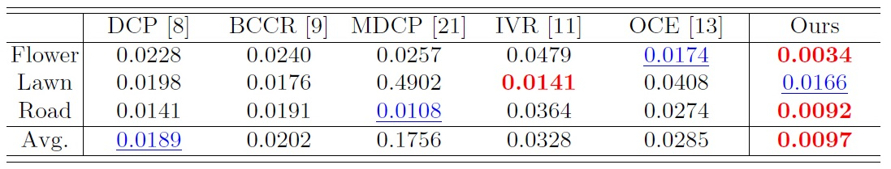
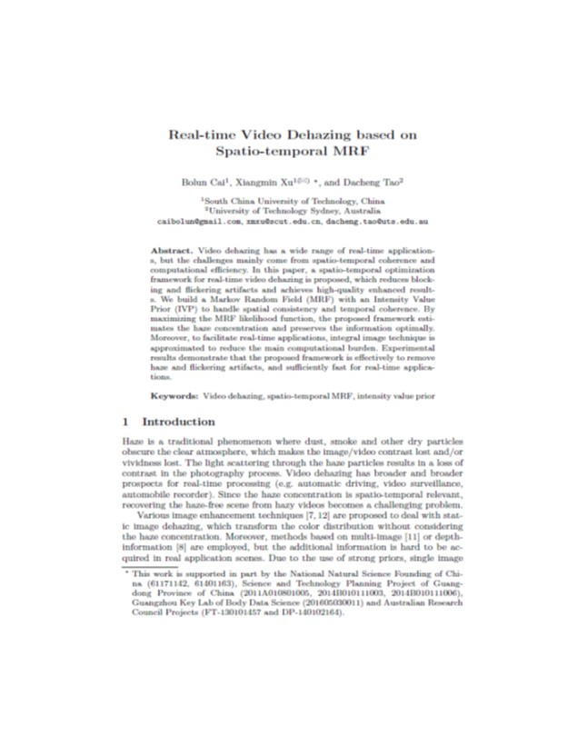

Bolun Cai, Xiangmin Xu, Dacheng Tao
Pacific-Rim Conference on Multimedia (PCM), 2016
Bolun Cai Xiangmin Xu Dacheng Tao
South China University of Technology
|  |
Spatio-temporal MRF for video dehazing. DCP is used to estimate the haze concentration and an MRF is built based on IVP between inner-frame and inter-frame. |
Abstract
Video dehazing has a wide range of real-time applications, but the challenges mainly come from spatio-temporal coherence and computational efficiency. In this paper, a spatio-temporal optimization framework for real-time video dehazing is proposed, which reduces blocking and flickering artifacts and achieves high-quality enhanced results. We build a Markov Random Field (MRF) with an Intensity Value Prior (IVP) to handle spatial consistency and temporal coherence. By maximizing the MRF likelihood function, the proposed framework estimates the haze concentration and preserves the information optimally. Moreover, to facilitate real-time applications, integral image technique is approximated to reduce the main computational burden. Experimental results demonstrate that the proposed framework is effectively to remove haze and flickering artifacts, and sufficiently fast for real-time applications.
Experiments
 
Downloads
|  |
"Real-time Video Dehazing based on Spatio-temporal MRF" Bolun Cai, Xiangmin Xu, Dacheng Tao Pacific-Rim Conference on Multimedia (PCM), 2016 |
Last update: Oct 06, 2016